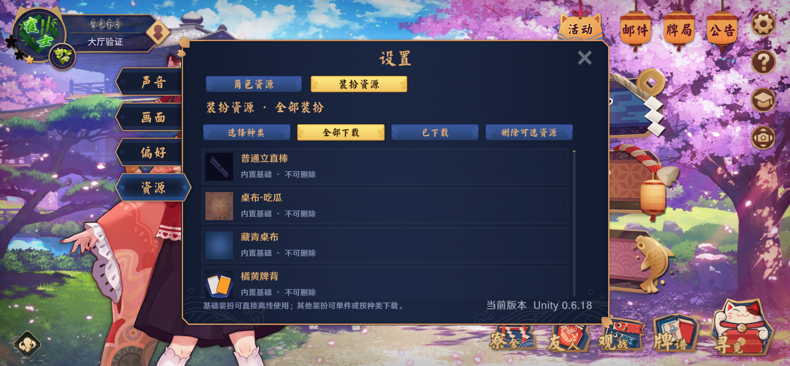
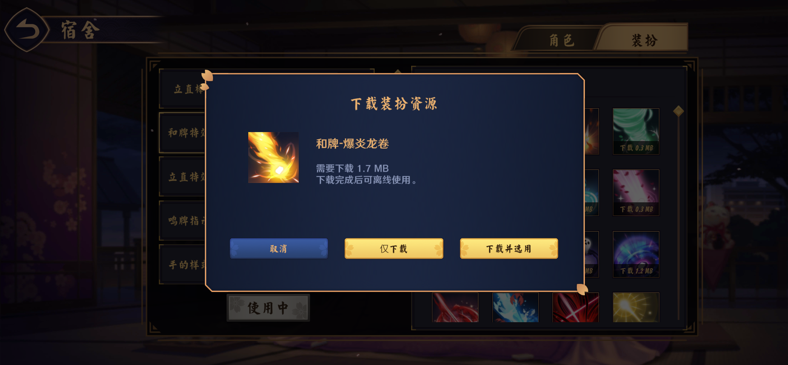
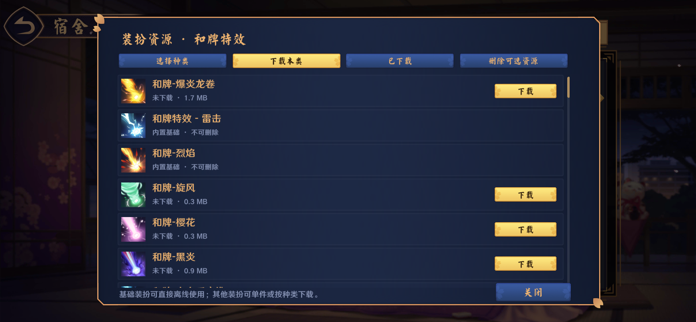
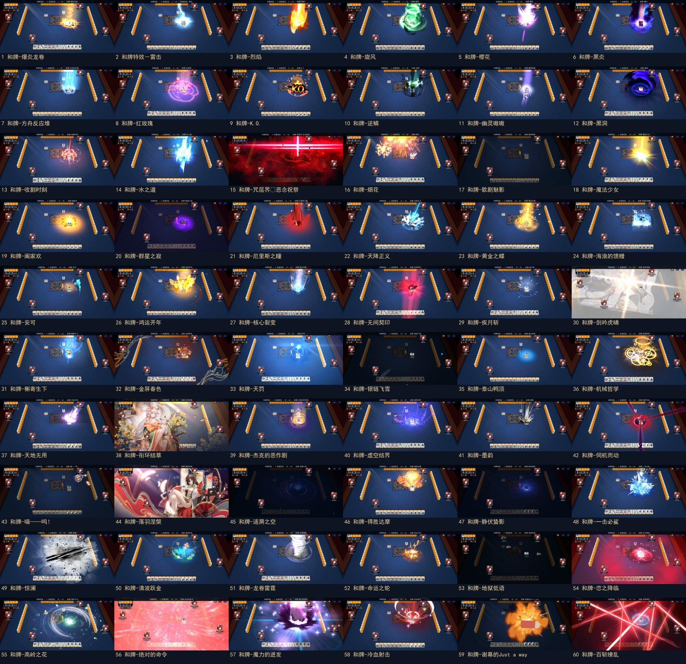

云间日麻 0.6.18 · 和牌特效与装扮资源
59 款已定位原生和牌特效＋默认款。全部画面来自当前 Unity 游戏运行，按原版 Lua 处理新旧根节点、动画牌、渲染层级、声音、时序与回收。
总览为 2 倍速、无音轨，约 3 分 5 秒；游戏内使用正常速度并保留原版音效。点击名称跳转到对应款式。
装扮下载
基础包每类保留 3 款，手部保留 2 款可选。其他装扮支持资源页按类别批量下载、装扮页单独下载与选用、取消续传、校验安装和删除；开局资源准备支持局域网接收及基础替代。

设置 → 资源 → 装扮资源
装扮页的单件下载与下载后选用
和牌分类列表及批量下载实际下载进度，支持取消续传验证范围
完成 480 个四座位荣和／自摸场景、48 个补充 Lua 场景及实际 HTTP 下载、续传、损坏包拒绝、使用期删除保护和中转检查。额外原生资源中未映射项与已过期缺失项已记录，不作为已完成款式宣传。
全部效果关键帧
